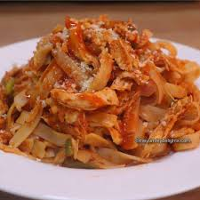

Italian Chicken

Description
This was a favorite when I was young. Tender chicken in a tomato and cheese sauce.
My mother would serve this over spaghetti but other pastas will work as well.
Ingredients
- 2 2-Pound broiler chickens, cut up
- 1 15-ounce can tomato sauce
- 1 can condensed tomato soup
- 1 6-ounce can tomato paste
- 3/4 Cup water
- 1/2 Cup grated parmesan cheese
- 3 cloves garlic, peeled and minced
- 1 Tbsp. dried oregano
- Dash of course salt
- Dash fresh ground pepper
- 6 ounces mozzarella cheese
- 4 ounces provolone cheese
- 8 ounces dry spaghetti
Steps
- Preheat oven to 375 degrees
- In dutch oven combine chicken and all ingredients except mozzarella, provolone and spaghetti
- Cover and bake in oven for 30 minutes
- Remove from oven, stir mixture to blend, top with remaining cheeses
- Cover and return to oven for 30 additional minutes or until chicken is tender
- While mixture is in oven, prepare spaghetti
- Bring 3 quarts of water to a boil, add dash of salt and olive oil
- add spaghetti to water, do not cover and allow water to remain at a boil, stirring occasionally to prevent sticking
- Cook spaghetti al dente, drain
- Remove sauce from oven, stir mixing cheeses into sauce
- Spoon or ladle sauce and chicken over pasta
- Makes 4 servings